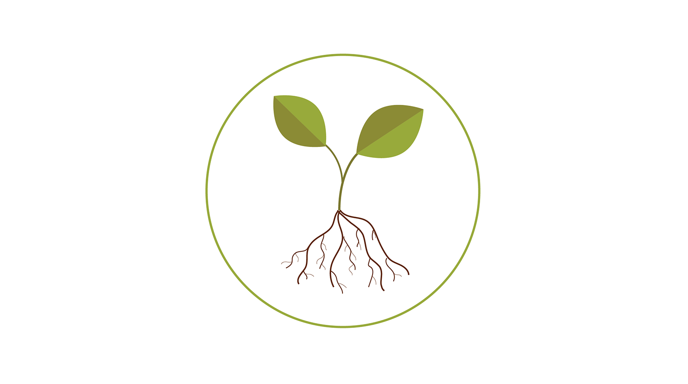
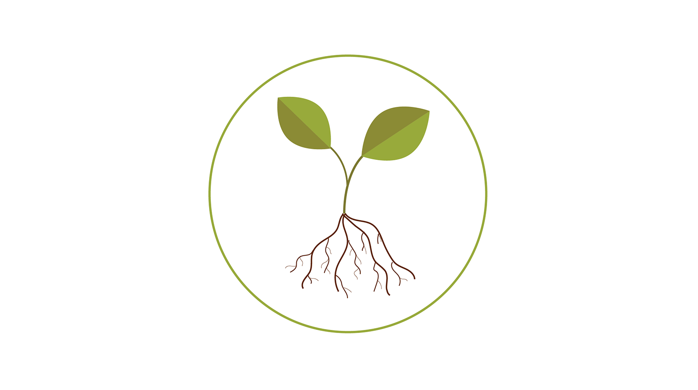

My name is Viktor and i am currently studying for my bachelor degree in Interaction Design at Malmö Högskola. Right now, I am on my fourth semester with two to go. Since the field of Interaction Design is very broad we are given the opportunity to specialize in the area we find most interesting. For me it is programming. I studied one intro course of web development prior to Interaction Design which taught me the basics of building websites, along with an intro course in C#. I have picked out several different projects I have worked in that I think represents me as an interaction designer.
Wellcome to my portfolio.
Besides the projects presented in my portfolio I have done a large number of smaller projects, in most of which I have had a lot of opportunities to practice programming. Both the Java and C# course i studied were primarily focused on backend programming which helped me a lot when switching over to JavaScript. During our second year, we switched the main programming language from Java to JavaScript.
Other than programming, i have experience with user testing and research.

 
